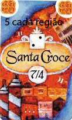
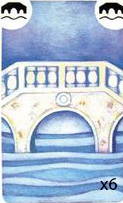

Coloque o tabuleiro no centro da mesa. Cada jogador escolhe uma cor e recebe:
25 aristocratas (cubos), 2 pedras de prestígio e 2 pontes.
Cada jogador coloca 1 pedra de prestígio no espaço 0 da trilha de pontos. A
outra pedra de prestígio é colocada no tablô de pedra no canto superior direito do
tabuleiro.
Coloque o marcador laranja na posição 1 do quadrado da roda do sol. Ele será
movido um quadrado para frente depois de cada passagem.
As cartas de ação e limite são embaralhadas separadamente e colocadas em dois
montes.
Cada jogador joga o dado 4 vezes e a cada jogada coloca 2 aristocratas em um
distrito de acordo com o resultado do dado. Se um jogador tira o mesmo número 4 vezes
seguidas ele pode jogar novamente o dado para o último lance de dados.
Começando com um jogador escolhido aleatoriamente e procedendo no sentido do
relógio, cada jogador deve colocar sua ponte no tabuleiro (sempre ligando dois
distritos). Repita o processo para a segunda ponte.
O jogador inicial muda para o próximo da esquerda (sentido do relógio) cada turno.
O jogador inicial coloca sua pedra de prestígio no topo mais a esquerda do
tablô de pedra no tabuleiro. As pedras restantes (dos outros jogadores) são escolhidas
aleatoriamente e colocadas nas posições 2 e 3. O primeiro jogador é chamado:
Distribuidor e os outros são chamados de: Criadores de Decisão.
O distribuidor compra cartas e secretamente separa-as em 3 mãos.
Para 3 jogadores: Compre 6 cartas de ação e 4 cartas de limite. Divida-as em 3 mãos, cada uma
contendo pelo menos 1 carta.
Para 2 jogadores: Compre 5 cartas de ação e 3 cartas limites e faça 2 mãos.
Na seguinte ordem: Primeiro Criador de Decisão, Segundo Criador de Decisão e Distribuidor,
os jogadores irão escolher uma das mãos. O jogador deve resolver TODAS as cartas de
ação quando pega uma mão e coloca todas as cartas de limite em frete dele.
Verifique se qualquer jogador possui 10 ou mais pontos em cartas limites. Se não,
repita os passos acima (1, 2, 3 e 4). Se somente um jogador (ou nenhum) possui menos
de 10 pontos em cartas limites, a passagem termina. Se 2 jogadores ainda possuem
menos de 10 pontos em cartas limites, estes jogadores jogam UMA roda a mais e então
a passagem termina.
Final de uma passagem
Cada jogador com MENOS de 10 pontos limites no final da passagem ganha pontos de bônus.
Seu bônus é calculado subtraindo seus pontos limites do maior número de pontos limites
para a passagem.
Se um único jogador tem o MENOR número de pontos limites e não ultrapassou 10 ou mais,
é permitido que o jogador execute uma ação extra de banimento como se ele tivesse
jogado a carta.
O jogador inicial passa para a esquerda para a próxima passagem, como se fosse uma nova
rodada.
Avance o marcador na roda do sol um espaço.
No final da terceira passagem, TODOS os distritos são pontuados não importando a
presença do doge.
É possível utilizar cartas de Arcana para ajudar um miliciano?
Não.
É possível jogar um personagem de um jogador adversário para fora do distrito
utilizando o recuo após um combate perdido (pelo jogador adversário)?
Não. Para sair do distrito, é necessário utilizar uma ação de movimento. Uma vez que
o recuo não é considerado uma ação de movimento, não é possível.
É possível utilizar uma carta de missão quando o tesouro daquela missão
está com um personagem (do jogador) que já saiu do distrito?
Não. Para utilizar uma carta de missão, algum personagem (do jogador) dentro do distrito
deve estar carregando pelo menos um ítem daquela missão.
Quando um personagem larga um tesouro, para onde ele vai (o tesouro)?
O jogador que controla o personagem que largou o tesouro deve colocar o tesouro em
alguma sala que não possua um tesouro. Esse tesouro deverá ser tratado como um baú
daqui para frente.
É possível começar um combate dentro de uma construção?
Sim.
Em caso de empate em um combate com um miliciano, quem vence?
O miliciano vence em caso de empates.
O jogo termina no final da terceira passagem depois que TODOS os distritos foram
pontuados. O jogador que tiver mais pontos vence. Empates são determinados
pelo número de aristocratas no distrito de San Marco.
Carta de Distrito

O jogador pode pegar 1 aristocrata da sua reserva e colocá-lo no tabuleiro tendo
as seguintes possibilidades:
a) Colocar o aristocrata no distrito que está indicado na carta ou
b) Colocar o aristocrata no distrito que está indicado na carta e então cruzar
uma única ponte que ele comanda para um distrito vizinho. Só é possível mover por apenas
1 única ponte durante essa ação.
Carta de Ponte

Coloque uma ponte do suprimento. Se não houver nenhuma, tome o controle de uma ponte
de outro jogador e pode mover aquela ponte para qualquer lugar. Não mais do que 3
pontes de diferentes jogadores são permitidas entre 2 distritos.
O jogador pode pegar 1 aristocrata da sua reserva e colocá-lo no tabuleiro tendo
as seguintes possibilidades:
a) Colocar o aristocrata no distrito que está indicado na carta ou
b) Colocar o aristocrata no distrito que está indicado na carta e então cruzar
uma única ponte que ele comanda para um distrito vizinho. Só é possível mover por apenas
1 única ponte durante essa ação.
O jogador pode pegar 1 aristocrata da sua reserva e colocá-lo no tabuleiro tendo
as seguintes possibilidades:
a) Colocar o aristocrata no distrito que está indicado na carta ou
b) Colocar o aristocrata no distrito que está indicado na carta e então cruzar
uma única ponte que ele comanda para um distrito vizinho. Só é possível mover por apenas
1 única ponte durante essa ação.
O jogador pode pegar 1 aristocrata da sua reserva e colocá-lo no tabuleiro tendo
as seguintes possibilidades:
a) Colocar o aristocrata no distrito que está indicado na carta ou
b) Colocar o aristocrata no distrito que está indicado na carta e então cruzar
uma única ponte que ele comanda para um distrito vizinho. Só é possível mover por apenas
1 única ponte durante essa ação.
Dinheiro escondido
Os jogadores não devem mostrar seu dinheiro para os outros jogadores.
Regras da expansão
Empate em combates (regra da expansão)
Se dois jogadores empatarem em um combate, o atacante não ganha automaticamente
o combate. Ao invés disso, cada jogador soma os valores de todos os dados que ele
rolou e soma-se qualquer bônus de habilidades e/ou cartas de Arcana. O personagem
com maior total vence. Em caso de empate, o atacante vence.
Número de cartas de Arcana em um combate
Jogadores não mais limitados a jogar somente uma carta de Arcana em um combate.
Cada jogador pode jogar qualquer número de cartas de Arcana em um combate. O atacante
ainda deve jogar suas cartas primeiro (abertas), antes do defensor.
Movimento de personagens da mesma gangue e troca de tesouros e/ou equipamentos
Quando um personagem move, agora ele pode passar por um espaço que é ocupado
por um outro personagem da mesma gangue. Entretanto, um personagem não pode
terminar seu movimento no mesmo espaço que outro personagem. Quando um personagem
passa através de um espaço ocupado por outro membro da mesma gangue os dois
personagens podem trocar qualquer ou todos os tesouros e/ou equipamentos que eles
carregam.